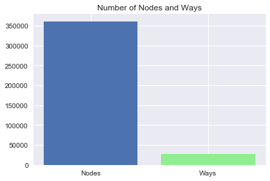

Introduction
OpenStreetMap is a community driven project with the goal of providing open-source geographic data for the entire Earth. The purpose of this project will be to take OpenStreetMap data, clean it using data munging techniques, and run SQL queries once the data has been cleaned.
The data I decided to use is from the map of the Island of Hawai’i (also known as the Big Island), in the State of Hawaii, United States of America. I grew up on the Big Island, so it is an area I am familiar with, which should make checking for errors in the data easier.
Problems Encountered in the Map
After auditing a sample of the data using Python, several problems were encountered. Of these, I decided to focus on cleaning the street name, zip code, and telephone number data:
#!/usr/bin/env python
# -*- coding: utf-8 -*-
import xml.etree.cElementTree as ET
OSM_FILE = "County_of_Hawaii.osm" # Names for osm files
SAMPLE_FILE = "sample.osm"
k = 10 # Parameter: take every k-th top level element
#Taking a sample of data from the osm file to work with
def get_element(osm_file, tags=('node', 'way', 'relation')):
"""Yield element if it is the right type of tag
Reference:
http://stackoverflow.com/questions/3095434/inserting-newlines-in-xml-file-generated-via-xml-etree-elementtree-in-python
"""
context = iter(ET.iterparse(osm_file, events=('start', 'end')))
_, root = next(context)
for event, elem in context:
if event == 'end' and elem.tag in tags:
yield elem
root.clear()
with open(SAMPLE_FILE, 'wb') as output:
output.write('<?xml version="1.0" encoding="UTF-8"?>\n')
output.write('<osm>\n ')
# Write every kth top level element
for i, element in enumerate(get_element(OSM_FILE)):
if i % k == 0:
output.write(ET.tostring(element, encoding='utf-8'))
output.write('</osm>')
Street Names
The first issue involving the street names was that they did not adhere to a standard format:
- Some street names used abbreviations in their names while others do not (e.g. Milo St. vs. Lako Street or Puni Lapa Loop N. vs. Puni Mauka Loop North)
- Some names contain words in all lowercase (e.g. Kapoi street)
Secondly, way elements for street data have tags containing the street name where the key is “name” instead of “addr:street.”
To clean the street names data, I modified the “update_name” function from the Udacity Case Study Lesson. After making changes, the function will: Unabbreviate all abbreviated words, change words written in all lowercase to have the first letter capitalized, and update the tag key to be “street.”
Zip Codes
I found that there were no problems with how the zip codes were formatted, however, three zip codes were erroneous. One of the zip codes was is a zip code used on the island of Moloka’i, the other is a zip code that is an Alaskan zip code, and the last was given as “HI.”
The after looking up the true zip codes for each of the three locations with inconsistent codes, I created the “update_zip” function to correct them.
Phone Numbers
There were 15 different formats for how phone numbers were formatted. Here are some examples:
(808) XXX – XXXX
(808) – XXX – XXXX
+1 808 XXX XXXX
+1 808 XXX – XXXX
+1 (808) XXXXXXX
+1 – 808 – XXX – XXXX
* XXXXXXX
The “update_phones” function converts all phone numbers to the format
(808) – XXX – XXXX.
import xml.etree.cElementTree as ET
from collections import defaultdict
import re
import pprint
from titlecase import titlecase
OSMFILE = "County_of_Hawaii.osm"
#Modified code from the Case Study lesson
street_type_re = re.compile(r'\b\S+\.?$', re.IGNORECASE)
expected = ["Street", "Avenue", "Boulevard", "Drive", "Court", "Place", "Square", "Lane", "Road",
"Trail", "Parkway", "Commons", "Loop", "Highway", "Circle", "South", "Way"]
#Unexpected is a list of names that were not in the expected list above that need to be changed
unexpected = ["Trl", "Roadd", "place", "street", "trail", 'Ave', 'Ave.', 'Rd', 'St', 'Traill']
def audit_street_type(street_types, street_name):
m = street_type_re.search(street_name)
if m:
street_type = m.group()
if street_type not in expected:
street_types[street_type].add(street_name)
def is_street_name_way(elem):
"""Checks if there is a tag with the k attribute "name" for a way tag"""
return elem.attrib['k'] == "name"
def is_street_name_node(elem):
"""Checks if there is a tag with the k attribute "add:street" for a node tag"""
return elem.attrib['k'] == "addr:street"
def audit(osmfile):
osm_file = open(osmfile, "r")
street_types = defaultdict(set)
for event, elem in ET.iterparse(osm_file, events=("start",)):
if elem.tag == "way":
for tag in elem.iter("tag"):
if is_street_name_way(tag):
audit_street_type(street_types, tag.attrib['v'])
elif elem.tag == "node":
for tag in elem.iter("tag"):
if is_street_name_node(tag):
audit_street_type(street_types, tag.attrib['v'])
osm_file.close()
return street_types
def test_street():
st_types = audit(OSMFILE)
pprint.pprint(dict(st_types))
#test_street()
import xml.etree.cElementTree as ET
from collections import defaultdict
import re
import pprint
from titlecase import titlecase
import bs4
from urllib import urlopen as ureq
from bs4 import BeautifulSoup
OSMFILE = "County_of_Hawaii.osm"
#Scrape from a webpage a list of all the zip codes used in the County of Hawaii using Beautiful Soup
my_url = 'http://www.zipcodestogo.com/Hawaii/HI/'
uclient = ureq(my_url)
html_page = uclient.read()
uclient.close()
soup = BeautifulSoup(html_page, 'html.parser')
expected_zip_list = []
table = soup.find('table', {'width': '100%'})
for zip_code in table.find_all('tr')[3:]: #skip first three results in table since they contain table headings not zip codes
a = str(zip_code.td.find('a'))
expected_zip_list.append(re.findall(r'>(.*?)<', a)[0]) #use regex to extract the zipcode from the a tag and append it to the list
def audit_zip(zip_codes, zip_code):
if zip_code not in expected_zip_list:
zip_codes.add(zip_code)
def is_zip_code(elem):
return elem.attrib['k'] == "addr:postcode"
def audit_zip_codes(osmfile):
osm_file = open(osmfile, "r")
zip_codes = set()
for event, elem in ET.iterparse(osm_file, events=("start",)):
if elem.tag == "node" or elem.tag == "way":
for tag in elem.iter("tag"):
if is_zip_code(tag):
audit_zip(zip_codes, tag.attrib['v'])
osm_file.close()
return zip_codes
def test_zip():
zips = audit_zip_codes(OSMFILE)
pprint.pprint(set(zips))
#test_zip()
import xml.etree.cElementTree as ET
import pprint
import re
OSMFILE = "County_of_Hawaii.osm"
def audit_phone(phone_types, phone_number):
phone_types.add(phone_number)
def is_phone_number(elem):
return elem.attrib['k'] == ("phone" or "contact:phone")
def audit_phones(osmfile):
osm_file = open(osmfile, "r")
phone_types = set()
for event, elem in ET.iterparse(osm_file, events=("start",)):
if elem.tag == "node" or elem.tag =="way":
for tag in elem.iter("tag"):
if is_phone_number(tag):
audit_phone(phone_types, tag.attrib['v'])
osm_file.close()
return phone_types
def test_phone():
phones = audit_phones(OSMFILE)
pprint.pprint(set(phones))
#test_phone()
import csv
import codecs
import pprint
import re
import xml.etree.cElementTree as ET
import cerberus
from schema import Schema
OSM_PATH = "County_of_Hawaii.osm"
def update_name(name, key):
"""Programtically update names for street names that must be fixed."""
expected = ["Street", "Avenue", "Boulevard", "Drive", "Court", "Place", "Square", "Lane", "Road",
"Trail", "Parkway", "Commons", "Loop", "Highway", "Circle", "North", "South", "East", "West", "Way", ""]
unexpected = ["Trl", "Roadd",'Ave', 'Ave.', 'Rd', 'St', 'Traill']
mapping = { "Trl": "Trail",
"Roadd": "Road",
'Ave': 'Avenue',
'Ave.': 'Avenue',
'Rd': 'Road',
'St': 'Street',
'Traill': 'Trail'
}
key = key
#Use titlecase to make street names that are in lowercase have uppercase letters for the first letter in each word
name = titlecase(name)
#Correct street names with abbreviated cardinal directions to be unabbreviated
words = name.split()
words = set(words) #Create a set of words in the street name
if words.intersection(['E', 'W', 'S', 'N']) != set(): #Check if N, S, E, or W is in the street name
if words.intersection(['Building', 'Road', 'Drive', '330']) == set(): #Exclude way names such "Building E" or "Road A"
if 'S' in words: #Replace the abbreviation with the appropriate unabbreviated direction
name = name.replace('S', 'South')
key = 'street'
elif 'N' in words:
name = name.replace('N', 'North')
key = 'street'
elif 'E' in words:
name = name.replace('E', 'East')
key = 'street'
else:
name = name.replace('W', 'West')
key = 'street'
#Replace all other abbreviations with unabbreviated names such as Street for St.
m = street_type_re.search(name)
if m:
street_type = m.group()
if street_type in unexpected:
new_road_type = mapping[street_type]
road_name = name.rsplit(None, 1)[:-1]
name = road_name[0] + ' ' + new_road_type
key = 'street'
elif street_type in expected:
key = 'street'
if len(street_type) == 1: #Check is the last word in the street name is just one letter
if name.startswith('Rd'): #For example update Rd. A to Road A. Do not update Building A to Road A.
name = 'Road' + ' ' + street_type
key = 'street'
return name, key #If name is a street name, change the key to "street." If name is not a street is not a street name the key input will be returned.
def test_street():
st_types = audit(OSMFILE)
#pprint.pprint(dict(st_types))
for st_type, ways in st_types.iteritems():
for name in ways:
better_name = update_name(name, mapping)
print name, "=>", better_name
#test_street()
def update_zip(zip_code):
"""Update erroneous zip codes"""
if zip_code == '96770':
return '96785' #Fix the zip code for Mauna Loa Estates
elif zip_code == 'HI':
return '96740' #Fix zip code for Oahu Building
elif zip_code == '99723':
return '96720' #Fix the zip code for Hilo Chevron
else:
return zip_code
def test_zip():
zips = audit_zip_codes(OSMFILE)
#pprint.pprint(dict(zips))
for code in zips:
better_zip = update_zip(code)
print code, "=>", better_zip
#test_zip()
def update_phones(phone_number):
"""Updates phone numbers to the form (area code)-XXX-XXXX"""
just_numbers = re.findall('\d+', phone_number) #Find only digits in the phone number ie ignore "+", "(", ")", " "
if len(just_numbers) == 4:
return '(' + just_numbers[1] + ')' + '-' + just_numbers[2] + '-' + just_numbers[3]
elif len(just_numbers) == 3:
if just_numbers[0] == '1':
return '(' + just_numbers[1] + ')' + '-' + just_numbers[2][0:3] + '-' + just_numbers[2][3:]
else:
return '(' + just_numbers[0] + ')' + '-' + just_numbers[1] + '-' + just_numbers[2]
elif len(just_numbers) == 2:
return '(808)' + '-' + just_numbers[0] + '-' + just_numbers[1]
else:
if just_numbers[0][0:3] == '808':
return '(' + just_numbers[0][0:3] + ')' + '-' + just_numbers[0][3:6] + '-' + just_numbers[0][6:]
else:
return '(808)' + '-' + just_numbers[0][0:3] + '-' + just_numbers[0][3:]
def test_phone():
phones = audit_phones(OSMFILE)
#pprint.pprint(set(phones))
for number in phones:
better_number = update_phones(number)
print number, "=>", better_number
#test_phone()
NODES_PATH = "nodes.csv"
NODE_TAGS_PATH = "nodes_tags.csv"
WAYS_PATH = "ways.csv"
WAY_NODES_PATH = "ways_nodes.csv"
WAY_TAGS_PATH = "ways_tags.csv"
LOWER_COLON = re.compile(r'^([a-z]|_)+:([a-z]|_)+')
PROBLEMCHARS = re.compile(r'[=\+/&<>;\'"\?%#$@\,\. \t\r\n]')
SCHEMA = schema
# Make sure the fields order in the csvs matches the column order in the sql table schema
NODE_FIELDS = ['id', 'lat', 'lon', 'user', 'uid', 'version', 'changeset', 'timestamp']
NODE_TAGS_FIELDS = ['id', 'key', 'value', 'type']
WAY_FIELDS = ['id', 'user', 'uid', 'version', 'changeset', 'timestamp']
WAY_TAGS_FIELDS = ['id', 'key', 'value', 'type']
WAY_NODES_FIELDS = ['id', 'node_id', 'position']
def shape_element(element, node_attr_fields=NODE_FIELDS, way_attr_fields=WAY_FIELDS,
problem_chars=PROBLEMCHARS, default_tag_type='regular'):
"""Clean and shape node or way XML element to Python dict"""
node_attribs = {}
way_attribs = {}
way_nodes = []
tags = [] # Handle secondary tags the same way for both node and way elements
# YOUR CODE HERE
def child_tag(elem_tag):
for child in element.iter():
tag = {}
#print child
if child.tag == 'tag':
#print element.attrib['id']
k = child.attrib['k']
#print k
if LOWER_COLON.search(k):
new_k = k.split(':', 1)
tag['id'] = element.attrib['id']
tag['key'] = new_k[1]
if k == 'addr:street':
tag['value'] = update_name(child.attrib['v'], new_k[1])[0] #Update street names
elif k == 'addr:postcode':
tag['value'] = update_zip(child.attrib['v']) #Update zip codes
elif k == "contact:phone":
tag['value'] = update_phones(child.attrib['v']) #Update phone numbers
else:
tag['value'] = child.attrib['v']
tag['type'] = new_k[0]
#print tag
tags.append(tag)
elif PROBLEMCHARS.search(k):
continue
else:
tag['id'] = element.attrib['id']
tag['key'] = k
tag['value'] = child.attrib['v']
if elem_tag == 'way':
if k == 'name':
tag['value'] = update_name(child.attrib['v'], k)[0] #Update street names
tag['key'] = update_name(child.attrib['v'], k)[1] #Update key to "street"
tag['type'] = default_tag_type
#print tag
tags.append(tag)
if element.tag == 'node':
for node_field in node_attr_fields:
node_attribs[node_field] = element.attrib[node_field]
child_tag(element.tag)
return {'node': node_attribs, 'node_tags': tags}
elif element.tag == 'way':
for field in way_attr_fields:
way_attribs[field] = element.attrib[field]
child_tag(element.tag)
n = 0
for child in element.iter():
if child.tag == 'nd':
node = {}
node['id'] = element.attrib['id']
node['node_id'] = child.attrib['ref']
node['position'] = n
way_nodes.append(node)
n += 1
return {'way': way_attribs, 'way_nodes': way_nodes, 'way_tags': tags}
# ================================================== #
# Helper Functions #
# ================================================== #
def get_element(osm_file, tags=('node', 'way', 'relation')):
"""Yield element if it is the right type of tag"""
context = ET.iterparse(osm_file, events=('start', 'end'))
_, root = next(context)
for event, elem in context:
if event == 'end' and elem.tag in tags:
yield elem
root.clear()
def validate_element(element, validator, schema=SCHEMA):
"""Raise ValidationError if element does not match schema"""
if validator.validate(element, schema) is not True:
field, errors = next(validator.errors.iteritems())
message_string = "\nElement of type '{0}' has the following errors:\n{1}"
error_string = pprint.pformat(errors)
raise Exception(message_string.format(field, error_string))
class UnicodeDictWriter(csv.DictWriter, object):
"""Extend csv.DictWriter to handle Unicode input"""
def writerow(self, row):
super(UnicodeDictWriter, self).writerow({
k: (v.encode('utf-8') if isinstance(v, unicode) else v) for k, v in row.iteritems()
})
def writerows(self, rows):
for row in rows:
self.writerow(row)
# ================================================== #
# Main Function #
# ================================================== #
def process_map(file_in, validate):
"""Iteratively process each XML element and write to csv(s)"""
with codecs.open(NODES_PATH, 'w') as nodes_file, \
codecs.open(NODE_TAGS_PATH, 'w') as nodes_tags_file, \
codecs.open(WAYS_PATH, 'w') as ways_file, \
codecs.open(WAY_NODES_PATH, 'w') as way_nodes_file, \
codecs.open(WAY_TAGS_PATH, 'w') as way_tags_file:
nodes_writer = UnicodeDictWriter(nodes_file, NODE_FIELDS)
node_tags_writer = UnicodeDictWriter(nodes_tags_file, NODE_TAGS_FIELDS)
ways_writer = UnicodeDictWriter(ways_file, WAY_FIELDS)
way_nodes_writer = UnicodeDictWriter(way_nodes_file, WAY_NODES_FIELDS)
way_tags_writer = UnicodeDictWriter(way_tags_file, WAY_TAGS_FIELDS)
nodes_writer.writeheader()
node_tags_writer.writeheader()
ways_writer.writeheader()
way_nodes_writer.writeheader()
way_tags_writer.writeheader()
validator = cerberus.Validator()
for element in get_element(file_in, tags=('node', 'way')):
el = shape_element(element)
if el:
if validate is True:
validate_element(el, validator)
if element.tag == 'node':
nodes_writer.writerow(el['node'])
node_tags_writer.writerows(el['node_tags'])
elif element.tag == 'way':
ways_writer.writerow(el['way'])
way_nodes_writer.writerows(el['way_nodes'])
way_tags_writer.writerows(el['way_tags'])
if __name__ == '__main__':
# Note: Validation is ~ 10X slower. For the project consider using a small
# sample of the map when validating.
process_map(OSM_PATH, validate=False)
Overview of the Data
After writing Python code to clean the data, the updated data was written to csv files and then loaded into a database. Here are the file sizes for the original OpenStreetMap XML file as well as the csv files, found using Python:
from pprint import pprint
import os
from hurry.filesize import size
dirpath = 'C:\Users\Quentin\Documents\Udacity\Project 3 - OSM'
files_list = []
for path, dirs, files in os.walk(dirpath):
files_list.extend([(filename, size(os.path.getsize(os.path.join(path, filename)))) for filename in files])
for filename, size in files_list:
print '{:.<40s}: {:5s}'.format(filename,size)
audit.py................................: 3K
County_of_Hawaii.osm....................: 69M
create_sample.py........................: 1K
file_size.py............................: 398B
hawaii_county.db........................: 41M
map.png.................................: 146K
map_link.txt............................: 376B
nodes.csv...............................: 29M
nodes_tags.csv..........................: 396K
output_8_1.png..........................: 6K
Project 3 (Submission 1 Zipped).zip.....: 1M
Project 3 - Open Street Map Data.ipynb..: 51K
Project.docx............................: 190K
Project_3.pdf...........................: 357K
README.txt..............................: 472B
references.txt..........................: 829B
sample.osm..............................: 7M
schema.py...............................: 2K
schema.pyc..............................: 1K
sqlite-shell-win32-x86-3080600.zip......: 300K
sqlite3.exe.............................: 544K
sqlite_queries.py.......................: 3K
Untitled.ipynb..........................: 18K
Update_Name.odt.........................: 6K
update_write_csv.py.....................: 11K
ways.csv................................: 1M
ways_nodes.csv..........................: 9M
ways_tags.csv...........................: 2M
~$roject.docx...........................: 162B
Project 3 - Open Street Map Data-checkpoint.ipynb: 53K
Untitled-checkpoint.ipynb...............: 72B
.gitattributes..........................: 65B
audit.py................................: 3K
create_sample.py........................: 1K
file_size.py............................: 398B
map_link.txt............................: 376B
Project_3.pdf...........................: 357K
README.md...............................: 31B
README.txt..............................: 493B
references.txt..........................: 829B
sample.osm..............................: 7M
sqlite_queries.py.......................: 3K
update_write_csv.py.....................: 11K
COMMIT_EDITMSG..........................: 15B
config..................................: 323B
description.............................: 160B
FETCH_HEAD..............................: 118B
HEAD....................................: 23B
index...................................: 1018B
applypatch-msg.sample...................: 478B
commit-msg.sample.......................: 896B
post-update.sample......................: 189B
pre-applypatch.sample...................: 424B
pre-commit.sample.......................: 1K
pre-push.sample.........................: 1K
pre-rebase.sample.......................: 4K
pre-receive.sample......................: 544B
prepare-commit-msg.sample...............: 1K
update.sample...........................: 3K
exclude.................................: 240B
HEAD....................................: 160B
master..................................: 160B
master..................................: 142B
aaadc6554433f6dd49de8078b1cdc54acfcffe..: 443B
fc580d7986230b7129cbe4e91e1004ac4cc8cb..: 1K
a0a6fa116c749cadb7e64562e9512cc293da2f..: 1M
bb61aec6bb371a464ee6a0696e28e6c5745cf3..: 47B
1fea378b95af0d4896d48ca5a65a099d7bd18d..: 266B
f5274a77bb4e2d26f83ce319e5be6185733464..: 1K
f826e2878472e4b968e4a5eca2acad0674b5d7..: 281B
f3244302fb4866ea71d9a0514b5de040398f86..: 639B
85281487a3a68e5fe1d1c14420001e7ef5068e..: 433B
6ed9893b8d2784bdcb6e7de8ba5b828bdfdf2b..: 333K
c038d5cc5dd37893821fdd0f79fe1e4ab99c9c..: 250B
3c9f753b1b050492a6dde0169d6ca939300141..: 127B
a1110b5794582b53554bb1e4224b860d4e173f..: 75B
14f70676c36fb72f53691d0b058ae210a80b76..: 3K
master..................................: 41B
master..................................: 41B
At this point, I had come up with a few questions that I wanted to answer by querying the database using SQlite. Below are these questions, the queries I performed using Python with the SQLite3 module, along with the results:
How Do the Number of Nodes and Ways Compare?
import sqlite3
from pprint import pprint
import matplotlib.pyplot as plt
import seaborn as sns
import pandas as pd
%pylab inline
conn = sqlite3.connect('hawaii_county.db')
c = conn.cursor()
QUERY = 'SELECT COUNT(*) \
FROM node;'
number_of_nodes = c.execute(QUERY).fetchall()
print 'Number of Nodes: {}'.format(number_of_nodes[0][0])
QUERY = 'SELECT COUNT(*) \
FROM way;'
number_of_ways = c.execute(QUERY).fetchall()
print 'Number of Ways: {}'.format(number_of_ways[0][0])
def barplot_two_colors(xvar, xvar2, yvar, yvar2, xlab, ylab, title, ticks):
plt.bar(xvar, yvar)
plt.bar(xvar2, yvar2, color = 'lightgreen')
plt.xlabel(xlab)
plt.ylabel(ylab)
plt.title(title)
plt.xticks([xvar, xvar2], ticks)
plt.show()
barplot_two_colors([0], [1], [number_of_nodes[0][0]], [number_of_ways[0][0]], '', '', 'Number of Nodes and Ways', ['Nodes', 'Ways'])
Populating the interactive namespace from numpy and matplotlib
Number of Nodes: 360720
Number of Ways: 26775

How Many Tourist Attractions are on the Big Island?
QUERY = 'SELECT COUNT(*) \
FROM (SELECT * FROM node_tags UNION ALL SELECT * FROM way_tags) all_tags \
WHERE all_tags.key == "tourism" and all_tags.value == "attraction";'
tourism = c.execute(QUERY).fetchall()
print ''
print 'Number of Tourism Attractions: {}'.format(tourism[0][0])
Number of Tourism Attractions: 40
How Many Historic Sites are on the Big Island?
QUERY = 'SELECT COUNT(*) \
FROM (SELECT * FROM node_tags UNION ALL SELECT * FROM way_tags) all_tags \
WHERE all_tags.key == "historic";'
historic = c.execute(QUERY).fetchall()
print ''
print 'Number of Historic Sites: {}'.format(historic[0][0])
Number of Historic Sites: 25
How Many Beaches are on the Big Island?
QUERY = 'SELECT COUNT(*) \
FROM (SELECT * FROM node_tags UNION ALL SELECT * FROM way_tags) all_tags \
WHERE all_tags.key == "natural" and all_tags.value == "beach";'
beaches = c.execute(QUERY).fetchall()
print ''
print 'Number of Beaches: {}'.format(beaches[0][0])
Number of Beaches: 58
What is the Frequency for Each Zip Code on the Big Island?
QUERY = 'SELECT all_tags.value, COUNT(*) as num \
FROM (SELECT * FROM node_tags UNION ALL SELECT * FROM way_tags) all_tags \
WHERE all_tags.key == "postcode" \
GROUP BY all_tags.value \
ORDER BY num DESC'
zip_codes = pd.read_sql_query(QUERY, conn)
zip_codes.columns = ['Zip Code', 'Frequency']
zip_codes.index = np.arange(1, len(zip_codes) + 1)
print ''
print 'Frequency of Zip Codes'
print zip_codes
Frequency of Zip Codes
Zip Code Frequency
1 96778 58
2 96720 37
3 96740 32
4 96727 6
5 96749 5
6 96704 4
7 96710 4
8 96738 4
9 96743 4
10 96737 2
11 96755 2
12 96771 2
13 96772 2
14 96777 2
15 96785 2
16 96725 1
17 96750 1
18 96760 1
19 96783 1
The results from this query surprised me since the zip codes for the Big Island’s two largest towns Hilo, and Kona are second and third on this list respectively. Also, there appear to be a relatively high amount of occurrences for the zip code “96778.” However, it appears that overall there is not a lot of zip code data, so perhaps 96778 is simply overrepresented in the dataset while 96720 and 96740 are underrepresented.
What are the Number of Unique Users?
QUERY = 'SELECT COUNT(DISTINCT(nodes_and_ways.user)) \
FROM (SELECT user FROM node UNION ALL SELECT user FROM way) nodes_and_ways;'
users = c.execute(QUERY).fetchall()
print ''
print 'Number of unique users: {}'.format(users[0][0])
Number of unique users: 314
Who are the Top 10 Most Prolific Users?
QUERY = 'SELECT nodes_and_ways.user as unq_user, COUNT(*) as num \
FROM (SELECT user FROM node UNION ALL SELECT user FROM way) nodes_and_ways \
GROUP BY unq_user \
ORDER BY num DESC \
LIMIT 10;'
top_users = pd.read_sql_query(QUERY, conn)
top_users.columns = ['User Name', 'Frequency']
top_users.index = np.arange(1, len(top_users) + 1)
print ''
print 'Top 10 Users'
print top_users
Top 10 Users
User Name Frequency
1 Tom_Holland 144965
2 bdiscoe 104865
3 ksamples 66860
4 Chris Lawrence 6420
5 monaliki 6240
6 Vlad 5184
7 Mission Aware Technologies 4960
8 InfiNorth 4553
9 dima 3534
10 OklaNHD 3454
What are the Top 10 Most Frequent Amenities?
QUERY = 'SELECT value, COUNT(*) as num \
FROM (SELECT * FROM node_tags UNION ALL SELECT * FROM way_tags) all_tags \
WHERE all_tags.key == "amenity" \
GROUP BY value \
ORDER BY num DESC \
LIMIT 10'
top_amenities = pd.read_sql_query(QUERY, conn)
top_amenities.columns = ['Amenity', 'Frequency']
top_amenities.index = np.arange(1, len(top_amenities) + 1)
print ''
print 'Top 10 Amenities'
print top_amenities
Top 10 Amenities
Amenity Frequency
1 parking 427
2 restaurant 107
3 toilets 69
4 fuel 45
5 fast_food 35
6 cafe 32
7 school 32
8 place_of_worship 31
9 recycling 18
10 post_office 17
What are the Top 10 Most Frequent Restaurant Cuisines?
QUERY = 'SELECT value, COUNT(*) as num \
FROM node_tags \
WHERE node_tags.key == "cuisine" \
GROUP BY value \
ORDER BY num DESC \
LIMIT 10'
top_cuisines = pd.read_sql_query(QUERY, conn)
top_cuisines.columns = ['Cuisine', 'Frequency']
top_cuisines.index = np.arange(1, len(top_cuisines) + 1)
print ''
print 'Top 10 Cuisines'
print top_cuisines
conn.close()
Top 10 Cuisines
Cuisine Frequency
1 thai 8
2 burger 6
3 pizza 6
4 american 4
5 chinese 4
6 ice_cream 4
7 italian 4
8 japanese 4
9 mexican 4
10 regional 4
There are many Thai restaurants in my hometown of Kona, so Thai being the most frequent cuisine is not surprising here.
Other Ideas about the Dataset
From the database query for zip codes, it is apparent there is not much zip code data and that many zip codes are missing from the dataset. The Big Island has 32 total zip codes, yet only 19 are listed in the database. Ideally, data currently missing zip codes could have zip codes added manually by users or programmatically by using latitude and longitude or address data to find the correct zip code.
Another possible shortcoming with the data is that for tags with the amenity key, there are separate values that are very similar such as “restaurant”, “fast_food”, and “cafe.” If these values were grouped together under a new category such as “food”, it would reduce the amount of values one would have to keep track of in the data. However, if we did group these together under a general “food” category, this wouldn’t be helpful if one wanted to query for detailed information, such as the number of fast food restaurants, therefore this is a bit of a gray area. A possible solution would be to create a Python dictionary for each value in tags for amenities, saving the general category as the dictionary key and the detailed value as the dictionary value.
Conclusion
After the auditing and cleaning the OpenStreetMap data for the Big Island is certainly in a better shape than when it was downloaded. The street names and telephones now have a standard format, street names have a tag with key: “street”, and zip codes that were erroneous were corrected. That being said, it is still far from perfect as there are missing zip code data as well as tag values that could be more general.
References
https://mapzen.com/data/metro-extracts/your-extracts/7fd309dd6da8
https://stackoverflow.com/questions/740287/how-to-check-if-one-of-the-following-items-is-in-a-list
https://www.tutorialspoint.com/python/string_replace.htm
https://stackoverflow.com/questions/3728655/titlecasing-a-string-with-exceptions
https://stackoverflow.com/questions/9222106/how-to-extract-information-between-two-unique-words-in-a-large-text-file
https://stackoverflow.com/questions/10365225/extract-digits-in-a-simple-way-from-a-python-string
http://pandas.pydata.org/pandas-docs/version/0.20/generated/pandas.read_sql_query.html#pandas.read_sql_query
http://sebastianraschka.com/Articles/2014_sqlite_in_python_tutorial.html
https://www.openstreetmap.org/about
https://www.openstreetmap.org/#map=8/19.950/-156.962
https://discussions.udacity.com/t/display-files-and-their-sizes-in-directory/186741/2